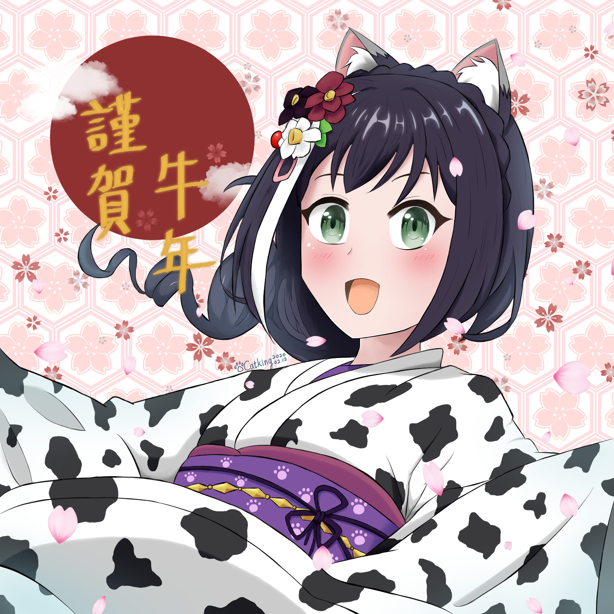
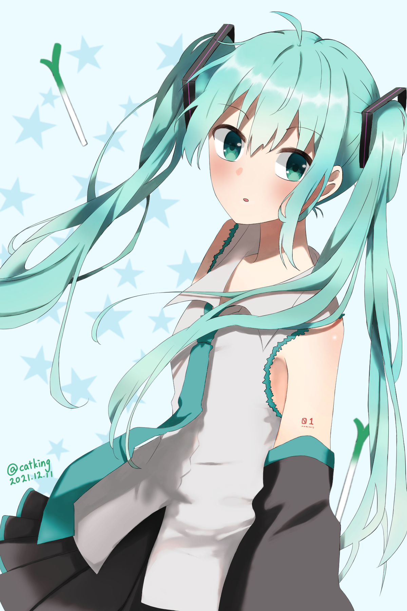
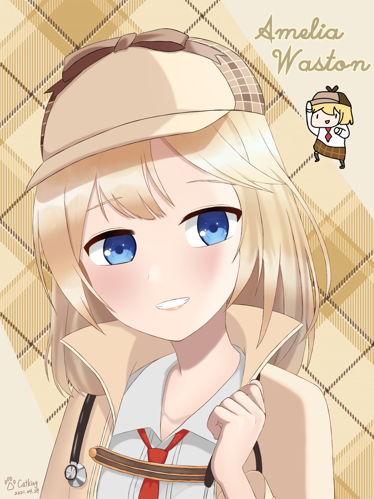
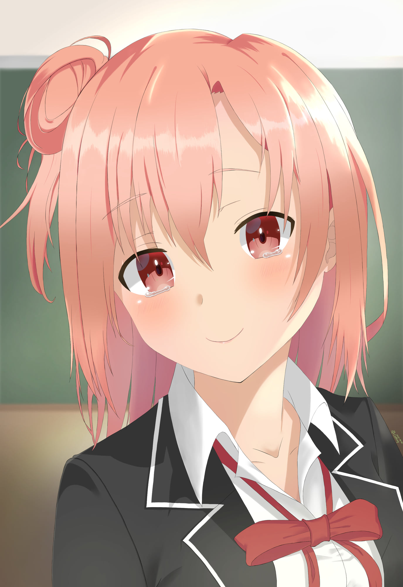
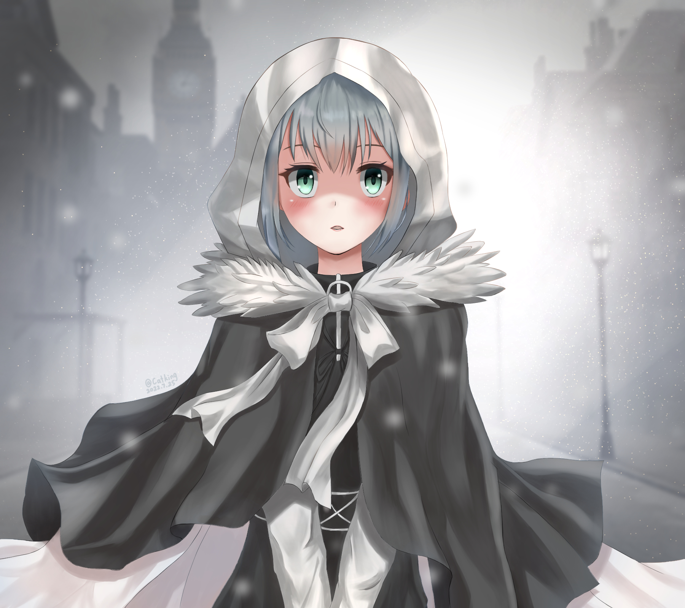

電繪，新興的繪圖方式，在近期電腦發展快速的趨勢下，透過許多種電腦合成的方式，讓許多種不同的繪畫方式能不用在花費大筆的器材費就能實現於畫面上，更帶來了 曾經讓許多人對繪畫感到害怕而不敢嘗試的最佳解藥— ctrl+z 復原!(好吧，可能只有我會這樣)，但圖層，筆刷和復原，甚至是3D建模等等讓電繪能夠建立出以往想像 不到的創新組合與表現效果，也大大改善了工作效率，更重要的是，他幾乎毫無門檻，只要你有電子設備，人人都能創作。
雖然畫畫本身是個很吃天份的興趣，但就和許多其他的技藝一樣，天份會有影響，而努力還是決定能力最根本的因素，但電繪最不同的地方就是可以藉由許多輔助工具來達成以往需要 很高技術門檻的事，俗話說的好，現代問題要用現代方式解決，有了許多電腦工具的輔助之後能大大降低繪畫的難度，比如:抖動修正，讓畫出好看的線條變得容易，各種筆刷讓許多 東西能夠輕鬆地以畫幾筆的方式來呈現，甚至3D建模，想要畫個城市的背景可以直接拿建模疊一疊就有很大的效果。
而我也不例外，雖然從小並沒有什麼天份，也從沒想過自己能夠畫畫，小時候上了美術課實在是沒有什麼信心，但正因為電繪的出現，讓我對畫畫重新抱持了一絲興趣 也體驗到了畫畫的樂趣，雖然並不是畫得很好，但是因為他的平易近人和網路資源和社群的豐富，讓各種事物夠以前所未有的速度學習，且參考大家分享的繪畫，臨摹 進而學習的過程也變得容易許多，也許這還是需要花費大量的時間才能練到爐火純青，但，自己的興趣從遙不可及變成看得到前進的方向的時候，那一切都變得不同了 。
"艾蜜莉亞"
這張是剛開始學習電繪時，以作品《Re:0 從零開始的異世界生活》的角色作為臨摹對象的Q版人物。

"牛年賀圖"
這張是2021農曆新年時，趁著過節氣氛畫的一張賀圖，由於想把角色融入一些過節氣氛，所以就用乳牛的紋路作為和服上的圖案。

"初音未來"
這張圖是我第一次嘗試使用灰階上色，但，我的陰影細節效果並沒有做得很好導致層次感不太夠，算是學習經驗的一次，不過的確整個工作流程快了許多。

"艾蜜莉亞·華生"
這張是臨摹練習之一，當時學到了新的頭髮高光上色方式想試試看，所以有用在這張上，這時豐富度還不太夠所以會看起來滿單薄的。

"由比濱結衣"
這張是當時我覺得細節層次做得最好的一張，雖然明顯感覺的到陰影層次過度還怪怪的，不過對我來說是當時進步最多的一張，意義非凡。

"格蕾"
這是近期畫的一張，在圖層數上有新紀錄的一張畫，自己感覺好像豐富度多了一些，也花了不少時間畫，但我覺得畫面的呈現感比不上上一張《由比濱結衣》，是理解到構圖很重要的一張。